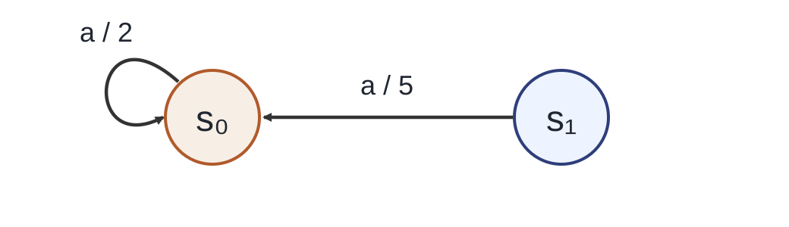

Hành động đầu và phần tiếp diễn
Sơ đồ cây một bước từ s0 với hai hành động a, b
Từ s0, hành động a dẫn tới ô s0 với thưởng 2 và phần tiếp diễn từ s0; hành động b dẫn tới ô s1 với thưởng −1 và phần tiếp diễn từ s1.
s₀
a
b
s₀, thưởng 2
tiếp diễn từ s₀
s₁, thưởng −1
tiếp diễn từ s₁
Đánh giá một hành động: giữ phần tiếp diễn theo chính sách cố định $\pi$.
Tối ưu: chọn phần tiếp diễn tốt nhất từ trạng thái đến.
Mỗi lựa chọn gồm ba phần: hành động đầu, chuyển trạng thái, rồi một chính sách tiếp diễn từ trạng thái mới. Khi đánh giá một hành động cụ thể, ta giữ nguyên phần tiếp diễn theo chính sách đang xét, nên hai nhánh trong hình dùng cùng quy ước tiếp diễn. Khi tìm giá trị tối ưu, phần tiếp diễn không bị ràng buộc nữa: từ trạng thái đến, ta được phép chọn chính sách tối ưu. Với chuyển trạng thái ngẫu nhiên, phải lấy kỳ vọng theo xác suất môi trường trước khi so sánh các hành động; tác tử không được chọn kết quả ngẫu nhiên. Cách tách này đặt tên cho phép tính áp dụng lên một bảng tiếp diễn bất kỳ.
Nguồn: lecture04-solving-MDP.pdf, tr. 6–8, 17; tham số điều chỉnh.
Điểm của hành động từ bảng giá trị
Bảng tiếp diễn $v=(4,7)$ của chính sách $\pi_0=(a,a)$.
$Q_v(s_1,b)=10+0{,}5\cdot 7=13{,}5$
Thưởng ngay cộng giá trị tiếp diễn đã chiết khấu.
$$Q_v(s,a)=\sum_{s',r}p(s',r\mid s,a)\,[\,r+\gamma v(s')\,]$$
Bảng $v=(4,7)$ là giá trị của chính sách $\pi_0=(a,a)$, nên bảng điểm vừa tính chính là $q^{\pi_0}$, chưa phải $q_*$. Cách tính từng ô: lấy thưởng nhận được, cộng giá trị của trạng thái đến nhân với hệ số chiết khấu, rồi lấy kỳ vọng theo xác suất chuyển. Ô $Q_v(s_1,b)$ minh họa trọn một bước: thưởng 10 cộng $0{,}5$ lần 7. Hai ô 4 và 7 trùng với $v$ vì đó là các hành động mà $\pi_0$ đã chọn, phần tiếp diễn quay lại chính bảng đang đánh giá. Ký hiệu $Q_v$ gắn với bảng $v$ cụ thể, để không nhầm với giá trị hành động tối ưu.
Nguồn: lecture04-solving-MDP.pdf, tr. 6, 17–19; tham số điều chỉnh.
Giá trị tối ưu
MDP có hữu hạn trạng thái và hành động, thưởng bị chặn, $0\le\gamma\lt1$.
$v_*(s)=\sup_{\pi\in\Pi}v^\pi(s)$
Cận trên nhỏ nhất của giá trị trạng thái trên lớp chính sách $\Pi$.
$q_*(s,a)=\sup_{\pi\in\Pi}q^\pi(s,a)$
Cận trên nhỏ nhất của giá trị hành động trên lớp chính sách $\Pi$.
$$v_*(s)=\max_{a\in\mathcal A(s)}q_*(s,a)$$
Lớp $\Pi$ gồm các chính sách hợp lệ, có thể phụ thuộc lịch sử. Định nghĩa dùng supremum, tức cận trên nhỏ nhất, trước khi chứng minh có chính sách đạt được nó; phần chứng minh nằm bằng tính co của toán tử. Quy ước cho $q^\pi(s,a)$: khởi đầu tại $s$, ấn định hành động đầu là $a$, rồi theo $\pi$ từ bước sau; không điều kiện hóa trên một hành động có xác suất bằng không. Tính chất Markov cho phép viết phần tiếp diễn bằng giá trị của trạng thái kế tiếp, dẫn tới quan hệ giữa $v_*$ và $q_*$: giá trị tối ưu của một trạng thái bằng cực đại theo hành động của $q_*$.
Nguồn: lecture04-solving-MDP.pdf, tr. 7–9.
Bellman tối ưu cho giá trị trạng thái
$$v_*(s)=\max_a\sum_{s',r}p(s',r\mid s,a)\,[\,r+\gamma v_*(s')\,]$$
1. Lấy kỳ vọng cho từng hành động
Tổng theo $s',r$ với xác suất môi trường.
2. Chọn giá trị lớn nhất
Cực đại theo $a$ sau khi các kỳ vọng đã có.
Phép tính có thứ tự: trước hết, với mỗi hành động, lấy kỳ vọng phần thưởng và giá trị tiếp diễn theo phân phối của môi trường; sau đó mới so các hành động và lấy cực đại. Thứ tự này khác với việc cho tác tử chọn cả kết quả ngẫu nhiên. So với phương trình Bellman kỳ vọng, điểm thay đổi duy nhất là thay trung bình theo chính sách $\pi$ bằng phép cực đại theo hành động. Đây là phương trình đặc trưng của giá trị tối ưu, chưa phải cách giải bằng cách thay số đã biết; sự tồn tại và tính duy nhất của nghiệm được chứng minh bằng tính co của toán tử.
Nguồn: lecture04-solving-MDP.pdf, tr. 6, 8.
Giá trị hành động và chính sách tham lam
$$q_*(s,a)=\sum_{s',r}p(s',r\mid s,a)\,[\,r+\gamma\max_{a'}q_*(s',a')\,]$$
$$\pi_*(s)\in\arg\max_a q_*(s,a)$$
$\max$ trả một giá trị; $\arg\max$ trả tập hành động đạt giá trị đó.
Cực đại áp dụng cho mọi hành động ở trạng thái kế tiếp, trong khi $a$ đã cố định.
Trong công thức $q_*$, hành động đầu $a$ đã được ấn định; phép cực đại chỉ xuất hiện ở trạng thái kế tiếp, trên mọi hành động khả dĩ tại đó. Hai ký hiệu cần tách bạch: $\max$ cho ra một con số, còn $\arg\max$ cho ra tập các hành động đạt con số đó, nên chính sách tham lam được viết bằng dấu thuộc tập. Khi đã có $q_*$, chọn tại mỗi trạng thái một hành động trong tập ấy là đủ. Chính sách tham lam dựng theo một bảng xấp xỉ của $q_*$ chưa mặc nhiên tối ưu; chứng minh cho phép dựng theo $q_*$ đúng sẽ đến sau.
Nguồn: lecture04-solving-MDP.pdf, tr. 7–9.
Hai toán tử Bellman
$(T^\pi v)(s)=\sum_a\pi(a\mid s)\,Q_v(s,a)$
Giữ chính sách Markov dừng khi trộn các ô theo $\pi$.
$(T_*v)(s)=\max_a Q_v(s,a)$
Chọn hành động theo chính bảng đang có.
Hai toán tử đều nhận bảng $v\in\mathcal V=\mathbb R^{|\mathcal S|}$ và trả một bảng mới.
Điểm bất động là bảng không đổi sau phép tính: $v^\pi=T^\pi v^\pi$ và $v_*=T_*v_*$.
Hai toán tử cùng nhận một bảng giá trị và cùng trả ra một bảng mới, khác nhau ở khối chọn hành động. Toán tử $T^\pi$ lấy trung bình theo xác suất chính sách, nên nó giữ nguyên chính sách Markov dừng đang xét. Toán tử $T_*$ lấy cực đại theo từng hàng, tức chọn hành động tốt nhất theo chính bảng đang có. Điểm bất động của một toán tử là bảng mà khi áp dụng phép tính, kết quả không đổi; $v^\pi$ là điểm bất động của $T^\pi$ và $v_*$ là điểm bất động của $T_*$. Việc áp dụng toán tử một lần có cho ngay nghiệm tối ưu hay không là câu hỏi phần sau sẽ trả lời.
Nguồn: lecture04-solving-MDP.pdf, tr. 10, 13.
Câu hỏi: một cập nhật có phải nghiệm tối ưu
Câu hỏi: Tính $T_*v$ và kết luận bảng $v$ đã phải giá trị tối ưu hay chưa.
$T_*v=(4,\,13{,}5)\ne(4,7)$, nên $v$ chưa phải $v_*$.
Cực đại được lấy theo hành động trong từng hàng.
Áp dụng $T_*$ lên từng hàng của bảng: tại $s_0$, cực đại giữa 4 và 2,5 cho 4; tại $s_1$, cực đại giữa 7 và 13,5 cho 13,5. Vậy một bước cập nhật cho bảng $(4,\,13{,}5)$, khác với $(4,7)$, nên bảng đã cho chưa phải $v_*$. Lỗi dễ gặp là chỉ kiểm tra một thành phần không đổi rồi kết luận điểm bất động; phải kiểm tra toàn bảng. Cũng cần tách ba đại lượng: $Q_v$ là bảng điểm từ một bảng $v$ cụ thể, $T_*v$ là kết quả một lần cập nhật, còn $v_*$ là nghiệm của phương trình. Phần tiếp theo giữ chính sách cố định để tính bảng giá trị một cách có hệ thống.
Nguồn: lecture04-solving-MDP.pdf, tr. 10, 17–19; tham số điều chỉnh.
Giá trị của chính sách cố định
Giữ $\pi_0=(a,a)$ và $\gamma=0{,}5$. Tìm giá trị dài hạn tại hai trạng thái.

Ở hai phần trước chúng ta đã có mô hình và khái niệm giá trị. Giờ đặt một quy tắc hành động cố định: chính sách $\pi_0$ chọn $a$ ở cả hai trạng thái. Câu hỏi là giá trị của chính sách này bằng bao nhiêu tại $s_0$ và $s_1$. Ta đang đo giá trị của một quy tắc đã cho. Vì $\pi_0$ chọn duy nhất hành động $a$ tại mỗi trạng thái, kỳ vọng rút gọn thành một phương trình mỗi trạng thái: phần thưởng ngay cộng $\gamma$ nhân giá trị trạng thái kế. Phần thưởng tương lai bị nhân $\gamma$ mỗi bước, nên đóng góp của nó giảm dần. Quan hệ giữa giá trị hiện tại và giá trị kế tiếp tạo thành một hệ phương trình.
Nguồn: lecture04-solving-MDP.pdf, tr. 14, 17; tham số điều chỉnh.
Hai phương trình Bellman
Đặt $x=v^{\pi_0}(s_0)$, $y=v^{\pi_0}(s_1)$. Cấu trúc chung: giá trị hiện tại bằng phần thưởng cộng chiết khấu giá trị kế.
$$x = 2 + 0{,}5\,x$$
từ chuyển $s_0\xrightarrow{a}s_0$, thưởng $2$.
$$y = 5 + 0{,}5\,x$$
từ chuyển $s_1\xrightarrow{a}s_0$, thưởng $5$.
$$x = \frac{2}{1-0{,}5} = 4,\qquad y = 5 + 0{,}5\cdot 4 = 7$$
Phương trình thứ nhất chỉ chứa $x$ vì $s_0$ đi về chính nó: $x=2+0{,}5x$, giải ra $x=4$. Đây là tổng của cấp số nhân với công bội $0{,}5$. Phương trình thứ hai dùng giá trị vừa tìm được: $y=5+0{,}5\cdot4=7$. Kiểm lại: $y$ nhận thưởng $5$ ngay, cộng một nửa giá trị của $s_0$ nơi nó quay về. Lỗi thường gặp là thay $x$ bằng $y$ ở phương trình thứ hai; hãy theo đúng cạnh của mô hình. Cặp $(4,7)$ là nghiệm chính xác của hệ, và sẽ là chuẩn đối chiếu khi ta xấp xỉ bằng lặp từ bảng $0$ bằng các lượt quét.
Nguồn: lecture04-solving-MDP.pdf, tr. 6, 18; tham số điều chỉnh.
Đánh giá bằng các lượt quét
Khởi tạo $v_0=(0,0)$ và cập nhật đồng bộ $v_{k+1}=T^{\pi_0}v_k$: mọi trạng thái đều dùng bảng cũ $v_k$.
$v_0$ $v_1$ $v_2$ $v^{\pi_0}$ $s_0$ 0 2 3 4 $s_1$ 0 5 6 7
Phép tính mẫu: $v_2(s_1)=5+0{,}5\cdot v_1(s_0)=5+0{,}5\cdot2=6$ — thưởng $5$, giá trị cũ $2$, kết quả $6$.
Thay vì giải hệ, ta lặp. Bắt đầu từ bảng $0$, một lượt quét áp dụng toán tử $T^{\pi_0}$ cho từng trạng thái: $v_1(s_0)=2+0{,}5\cdot0=2$, $v_1(s_1)=5+0{,}5\cdot0=5$. Lượt hai cho $(3,6)$. Trong phép tính $v_2(s_1)$, ba đại lượng có vai trò khác nhau: thưởng tức thời $5$, giá trị cũ $v_1(s_0)=2$ lấy từ bảng trước, và kết quả $6$. Nhầm thưởng với giá trị cũ là lỗi phổ biến nhất ở đây. Dãy $(0,0)$, $(2,5)$, $(3,6)$ tiến dần về nghiệm $(4,7)$; mỗi lượt đưa bảng gần hơn một bước chiết khấu. Quy trình cần một ngưỡng dừng và giới hạn số lượt.
Nguồn: lecture04-solving-MDP.pdf, tr. 14, 17; tham số điều chỉnh.
Quy trình đánh giá chính sách
Đầu vào: mô hình, $\pi$ cố định, $\theta>0$, $K\ge1$.
Tính đồng bộ $w=T^\pi v$.
Đo thay đổi lớn nhất $\delta=\max_s|w(s)-v(s)|$.
Nếu $\delta\le\theta$: trả $w$, đã đạt ngưỡng.
Nếu hết $K$ lượt: trả $w$, hết ngân sách.
Hết ngân sách không chứng nhận sai số mong muốn.
Quy trình gồm bốn phần. Đầu vào là mô hình, chính sách cố định, ngưỡng dương $\theta$ và ngân sách lượt $K$. Khởi tạo bảng giá trị, riêng trạng thái kết thúc giữ $0$ vì không còn tương lai. Mỗi lượt tính bảng mới $w$ bằng toán tử $T^\pi$, rồi đo $\delta$: thay đổi lớn nhất giữa hai bảng trên mọi trạng thái. Nếu $\delta\le\theta$ ta trả $w$ kèm nhãn đạt ngưỡng; nếu đã dùng hết $K$ lượt mà chưa đạt, trả $w$ cuối cùng kèm nhãn hết ngân sách — hai nhãn này phải phân biệt, vì hết ngân sách không bảo đảm sai số mong muốn. Điều kiện hội tụ thật sự là $\gamma<1$, không phải việc có đủ $K$. Với $n$ trạng thái, nhiều nhất $m$ hành động mỗi trạng thái và mô hình chuyển dày, mỗi lượt quét cho chính sách ngẫu nhiên tốn $O(n^2m)$ phép tính. Quy trình này trả bảng mới $w$; lặp giá trị sau này sẽ trả bảng $v$ dùng để trích chính sách — hai quy ước không được tráo.
Nguồn: lecture04-solving-MDP.pdf, tr. 6, 14, 34; hw3 B6.
Hai lịch cập nhật
Đồng bộ
Từ $v_0=(0,0)$: cả hai trạng thái dùng bảng cũ.
$v_1=(2,\;5)$
$v_1(s_1)=5+0{,}5\cdot0=5$.
Tại chỗ
Theo thứ tự $s_0$ rồi $s_1$; bước thứ hai dùng giá trị $s_0$ vừa tính.
$v_1=(2,\;6)$
$v_1(s_1)=5+0{,}5\cdot2=6$.
Mỗi cập nhật phải dùng đúng Bellman theo bảng hiện có; mỗi trạng thái phải được cập nhật vô hạn lần để có bảo đảm hội tụ.
Hai lịch cho kết quả khác nhau từ cùng bảng $0$. Đồng bộ: mọi trạng thái đọc giá trị từ bảng cũ, nên $s_1$ thấy $v_0(s_0)=0$ và nhận $5$. Tại chỗ: ta cập nhật $s_0$ trước, được $2$, rồi $s_1$ đọc ngay giá trị mới đó, nhận $5+0{,}5\cdot2=6$. Khác biệt một đơn vị đến hoàn toàn từ ô nguồn được dùng. Tại chỗ truyền thông tin mới trong cùng lượt; hiệu quả phụ thuộc mô hình và thứ tự cập nhật. Điều bắt buộc là mỗi cập nhật dùng đúng phương trình Bellman với bảng hiện có, và mỗi trạng thái được cập nhật vô hạn lần — nếu một trạng thái bị bỏ qua mãi thì không có bảo đảm hội tụ.
Nguồn: lecture04-solving-MDP.pdf, tr. 15; tham số điều chỉnh.
Câu hỏi: đánh giá chính sách
Câu hỏi: Cho $\pi_0=(a,a)$, $v_2=(3,6)$, $\gamma=0{,}5$. Tính $v_3=T^{\pi_0}v_2$ đồng bộ. Vì sao phép cập nhật không có $\max$?
Đáp án: $v_3=(3{,}5,\;6{,}5)$.
$v_3(s_0)=2+0{,}5\cdot3=3{,}5$.
$v_3(s_1)=5+0{,}5\cdot3=6{,}5$.
Không có $\max$ vì chính sách được giữ cố định: mỗi trạng thái chỉ có một hành động theo $\pi_0$, không có gì để so sánh.
Công thức cho biết đúng ô giá trị cần dùng trước khi thay số. Cùng một hành động $a$ ở cả hai trạng thái: $v_3(s_0)=2+0{,}5\cdot v_2(s_0)=2+1{,}5=3{,}5$; $v_3(s_1)=5+0{,}5\cdot v_2(s_0)=5+1{,}5=6{,}5$. Cả hai dòng đều đọc giá trị của $s_0$, vì đó là trạng thái kế theo chính sách. Về câu hỏi thứ hai: toán tử $T^\pi$ đánh giá một chính sách đã cho, nên chính sách xác định $\pi_0$ chọn duy nhất hành động $a$ ở mỗi trạng thái; $\max$ chỉ xuất hiện khi ta được phép chọn hành động tốt nhất. Khi thêm $\max$ vào phép cập nhật, ta bước sang phần tiếp theo: cải thiện chính sách.
Nguồn: lecture04-solving-MDP.pdf, tr. 14, 17; tham số điều chỉnh.
Cải thiện một bước Trạng thái $a$ $b$ Chọn $s_0$ $10$ $9{,}9$ $a$ $s_1$ $11$ $12{,}9$ $b$
$\pi_1=(a,b)$.
Mọi so sánh dùng cùng $v_{\pi_0}$. Hành động $b$ ở $s_1$ cho $3+0,9\cdot11=12,9$.Nguồn: tr. 19.
Vòng thứ hai Đánh giá $\pi_1$ $v_{\pi_1}=(10,30)$
$q_{\pi_1}(s_0,b)=0+0{,}9\cdot30=27$
Cải thiện $\pi_2=(b,b)$
$v_{\pi_2}=(27,30)$
Lặp chính sách chính xác Đầu vào: $M$, chính sách Markov dừng $\pi$, thứ tự hành động cố định.
Câu hỏi: vì sao không được đổi tùy ý giữa các hành động đồng hạng?
Phá hòa tùy ý có thể tạo chu trình chính sách; quy tắc cố định loại trừ chu trình này.
Thứ tự toàn cục cố định làm quy tắc phá hòa có tính tái lập. Giải hệ đặc tốn $O(|\mathcal S|^3)$; bước tham lam tốn một lượt duyệt mô hình.Nguồn: tr. 20; bổ sung phá hòa, dừng và chi phí.
Bảo đảm của lặp chính sách $$T^{\pi'}v_\pi=T_*v_\pi\ge T^\pi v_\pi=v_\pi.$$
Tính đơn điệu và tính co cho $v_{\pi'}\ge v_\pi$.
Số chính sách xác định tổng quát là $\displaystyle\prod_{s\in\mathcal S}|\mathcal A(s)|$; nếu mọi trạng thái có cùng tập hành động thì bằng $|\mathcal A|^{|\mathcal S|}$.
Với đánh giá chính xác và phá hòa cố định, số chính sách xác định hữu hạn nên thuật toán dừng tại chính sách tối ưu.
Phần sau giữ ý tưởng sao lưu Bellman nhưng bỏ bước giải hệ: lặp giá trị trên Gridworld.
Nếu chính sách thay đổi ngoài các hành động đồng hạng, cải thiện nghiêm ở ít nhất một trạng thái. Bảo đảm dừng hữu hạn phụ thuộc đánh giá chính xác và quy tắc phá hòa cố định.Nguồn: tr. 21, 33; làm rõ miền áp dụng.
Gridworld năm ô $\gamma=0{,}9$; tại $c_1$–$c_4$, chọn Left hoặc Right và chuyển tất định. Left tại $c_1$ giữ nguyên; chuyển thường nhận $-1$. Chuyển $c_4\to c_5$ nhận $+10$ thay cho $-1$; $v(c_5)=0$. Lượt sao lưu đầu Từ $v_0=0$, thử hai hành động tại từng ô:
$$v_1=(-1,-1,-1,10,0).$$
Mọi trạng thái đọc cùng bảng $v_0$. Lợi ích ở đích mới truyền tới $c_4$ sau một lượt.Nguồn: tr. 26.
Giá trị lan ngược $k$ $c_1$ $c_2$ $c_3$ $c_4$ $c_5$ 0 0 0 0 0 0 1 -1 -1 -1 10 0 2 -1,9 -1,9 8 10 0 3 -2,71 6,2 8 10 0 4 4,58 6,2 8 10 0
Mỗi lượt truyền lợi ích thêm một cạnh. Các số dùng gamma bằng 0,9 và cập nhật đồng bộ.Nguồn: tr. 27.
Lặp giá trị $$v_{k+1}=T_*v_k.$$
Không đánh giá trọn một chính sách trung gian. Mỗi sao lưu vừa nhìn trước vừa chọn hành động. Trích chính sách từ chính bảng $v$ dùng để kiểm phần dư. Công thức tổng quát xuất hiện sau mô hình và các lượt quét cụ thể.Nguồn: tr. 23.
Một lượt lặp giá trị Đầu vào: $M$, bảng $v$.
Chi phí một lượt:
$$C_{\mathrm{model}}=O\!\left(\sum_s\sum_{a\in\mathcal A(s)}|\operatorname{supp}p_{s,a}|\right).$$
Kiểm phần dư và tái sử dụng lượt quét Tính $w\leftarrow T_*v$ và $\rho\leftarrow\lVert w-v\rVert_\infty$.
Ở đây $\varepsilon_{\mathrm{pol}}$ là mức mất mát chính sách cho phép: chặn phần dư theo ngưỡng này bảo đảm $L\le\varepsilon_{\mathrm{pol}}$. Lượt $T_*v$ vừa kiểm phần dư, vừa là lượt VI kế tiếp khi chưa dừng.
Phần dư và chính sách tham lam dùng cùng bảng $v$ tại thời điểm kiểm. Nếu không đạt ngưỡng, $w$ được tái sử dụng làm bảng kế tiếp. Nếu gamma bằng không, một lượt sao lưu đủ.Nguồn: tr. 24, 34; bổ sung phép kiểm phần dư tái lập.
Trích chính sách từ cùng bảng $$\pi_v(s)\in\arg\max_a\sum_{s',r}p(s',r\mid s,a)[r+\gamma v(s')].$$
Câu hỏi: nếu phần dư tính trên $v$ nhưng chính sách trích từ $v'$ khác, chặn nào không còn áp dụng?
Chặn mất mát của chính sách tham lam theo $v$.
Đẳng thức $T^{\pi_v}v=T_*v$ chỉ đúng khi chính sách tham lam theo chính hàm $v$ dùng trong phần dư.Nguồn: tr. 24, 28; bổ sung kiểm tra.
Chi phí phép tính chính Trường hợp Chi phí PI: giải hệ đặc + tham lam $O(|\mathcal S|^3)+C_{\mathrm{model}}$ Mỗi lượt $T_*$ $C_{\mathrm{model}}$ Kiểm phần dư đầu tiên sau khởi tạo Thêm $C_{\mathrm{model}}$ Kiểm tiếp theo nếu chưa dừng Tái sử dụng $w$; mỗi lần thêm $C_{\mathrm{model}}$
Lặp giá trị bất đồng bộ Cập nhật bằng $T_*$, không phải $T^\pi$. Dùng giá trị mới nhất; có thể đổi thứ tự quét. Mỗi trạng thái phải được cập nhật vô hạn lần; dữ liệu không được cũ vô hạn. Tiêu chuẩn dừng cần chứng minh Phần dư $\rho(v)=\lVert T_*v-v\rVert_\infty$ đo độ lệch khỏi Bellman tối ưu.
Chứng minh $T_*$ co và có điểm bất động duy nhất. Chuyển phần dư thành sai số giá trị. Chuyển sai số thành mất mát của $\pi_v$. Phần bảo đảm tiếp theo xử lý ba bước theo thứ tự này.
Ba câu hỏi hội tụ Điểm bất động có duy nhất không? Mọi khởi tạo có tiến tới đó không? Một chính sách có đạt điểm đó không? Công cụ: tính co trong chuẩn vô cùng.
Quay lại giả thiết và chuẩn đã định nghĩa ở đầu bài.Nguồn: tr. 30–32.
Bất đẳng thức cực đại $$|\max_a x_a-\max_a y_a|\le\max_a|x_a-y_a|.$$
Suy ra $|(T_*u)(s)-(T_*v)(s)|\le\gamma\lVert u-v\rVert_\infty$.
Bổ đề đơn điệu:
$T^\pi$ đơn điệu do kỳ vọng có trọng số không âm. $T_*$ đơn điệu do phép max bảo toàn thứ tự. $T_*$ là ánh xạ co $$\lVert T_*u-T_*v\rVert_\infty\le\gamma\lVert u-v\rVert_\infty.$$
Định lý Banach cho điểm bất động duy nhất $\bar v$. $T_*^kv_0\to\bar v$ với mọi $v_0\in\mathcal V$. Ví dụ: sai số giá trị $\lVert v_k-v_*\rVert_\infty$ giảm theo $0{,}9^k$; với lỗi đầu $100$, cần $k\gt\ln(0{,}01)/\ln(0{,}9)\approx43{,}7$, tức ít nhất $44$ lượt.
Không gian hữu hạn chiều với chuẩn vô cùng là đầy đủ.Nguồn: tr. 31–32.
Điểm bất động chặn mọi chính sách Với mọi $\pi\in\Pi$ và chân trời $n$:
$$\mathbb E_\pi\!\left[\sum_{k=0}^{n-1}\gamma^kR_{k+1}\mid S_0=s\right]\le(T_*^n0)(s).$$
Đuôi có độ lớn không quá $\gamma^nR_{\max}/(1-\gamma)$.
Cho $n\to\infty$: $v_\pi(s)\le\bar v(s)$ với mọi $\pi\in\Pi$.
Quy hoạch ngược chặn từng hành động bởi cực đại, kể cả khi chính sách phụ thuộc lịch sử. Chặn đuôi cho phép chuyển sang chân trời vô hạn. Trang này chỉ chứng minh cận trên toàn cục.Nguồn: tr. 9, 31–32; hoàn chỉnh cận trên.
Chính sách tham lam đạt cận trên Chọn chính sách Markov dừng $\bar\pi$ tham lam theo $\bar v$:
$$T^{\bar\pi}\bar v=T_*\bar v=\bar v.$$
Điểm bất động của $T^{\bar\pi}$ là duy nhất, nên $v_{\bar\pi}=\bar v$.
Do đó $\bar v=v_*$ và $\bar\pi$ là chính sách tối ưu.
Cực đại đạt được vì mỗi tập hành động hữu hạn. Chỉ ở đây mới dùng toán tử theo chính sách cho chính sách Markov dừng vừa dựng.Nguồn: tr. 9, 31–32; tách bước đạt cận.
Phần dư chặn sai số giá trị Đặt $\rho=\lVert T_*v-v\rVert_\infty$ và $e=\lVert v-v_*\rVert_\infty$.
$$e\le\lVert v-T_*v\rVert_\infty+\lVert T_*v-T_*v_*\rVert_\infty\le\rho+\gamma e.$$
Suy ra $\displaystyle e\le\frac{\rho}{1-\gamma}$.
Đây là phép suy diễn phần dư sang sai số, không chỉ phát biểu kết quả. Dùng bất đẳng thức tam giác rồi tính co của $T_*$.Nguồn: tr. 32, 34; mở bước chứng minh.
Sai số chặn mất mát chính sách Với $\pi_v$ tham lam theo cùng $v$, $T^{\pi_v}v=T_*v$.
$$L\le\gamma e+\gamma(e+L),\quad L=\lVert v_*-v_{\pi_v}\rVert_\infty.$$
$$L\le\frac{2\gamma}{1-\gamma}e\le\frac{2\gamma}{(1-\gamma)^2}\rho.$$
Tách $T_*v_*-T^{\pi_v}v_{\pi_v}$ qua $T_*v=T^{\pi_v}v$, rồi dùng tính co của hai toán tử. Sau đó chặn $\lVert v-v_{\pi_v}\rVert$ bởi $e+L$ và chuyển vế. Đây là cơ sở của ngưỡng phần dư đã nêu.Nguồn: tr. 32, 34; bổ sung suy diễn đầy đủ.
CartPole còn thiếu mô hình Đã có: 324 trạng thái rời rạc, hai hành động. Còn thiếu: $p(s',r\mid s,a)$, kết thúc và thưởng đầy đủ. Lượng tử hóa vẫn gây sai số và bùng nổ trạng thái. Câu hỏi: chỉ có bộ mô phỏng thì phép tổng nào chưa tính chính xác?
Kỳ vọng theo $p(s',r\mid s,a)$.
Chọn công cụ theo dữ kiện Mục tiêu Lựa chọn Biết mô hình, đánh giá $\pi$ Lặp $T^\pi$ hoặc giải hệ Biết mô hình, tối ưu PI chính xác hoặc VI VI cần chặn mất mát Kiểm phần dư; trích từ cùng $v$ Không biết mô hình Ước lượng từ trải nghiệm
MDP hữu hạn và mô hình chuyển–thưởng đã biết cho phép tính giá trị và chính sách tối ưu. Khi không biết mô hình, ta chuyển sang ước lượng từ trải nghiệm ở Bài 05.
Nhấn ↓ để làm bài tập.
Bài tập 9: một lượt VI $\mathcal S=\{s_0,s_1,s_2\}$, $\mathcal A=\{a,b\}$, $\gamma=0{,}9$, $V_0=0$.
$(s,a)$ Kết quả $(p,r,s')$ $(s_0,a)$ $0{,}5:(1,s_0);\ 0{,}5:(-1,s_2)$ $(s_0,b)$ $0{,}5:(0,s_1);\ 0{,}5:(2,s_2)$ $(s_1,a)$ $(1,2,s_0)$ $(s_1,b)$ $(1,-1,s_1)$ $(s_2,a)$ $(1,2,s_1)$ $(s_2,b)$ $(1,0,s_0)$
Câu hỏi: tính $V_1$, rồi trích chính sách tham lam theo $V_1$.
Từ $V_0=0$, các cực đại cho $V_1=(1,2,2)$. Dùng chính $V_1$: $Q_{V_1}(s_0,a)=1{,}35$, $Q_{V_1}(s_0,b)=2{,}8$; tại $s_1$ được $(2{,}9,0{,}8)$; tại $s_2$ được $(3{,}8,0{,}9)$. Do đó chính sách tham lam theo $V_1$ là $(b,a,a)$.Nguồn: hw3.pdf, Bài 9, phần 1; phép tính được khai triển. Phần 2 được lược vì trùng chu trình đánh giá–cải thiện ở B01–B03 và không nằm trong 12 phút đã phân bổ.
Bài tập 6: đánh giá dạng ma trận Chứng minh $(I-\gamma P_\pi)v_\pi=r_\pi$ và tính khả nghịch khi $0\lt\gamma\lt1$.
Có thể dùng bán kính phổ của $P_\pi$ hoặc chuỗi Neumann để chứng minh khả nghịch.Nguồn: hw3.pdf, Bài 6.
Bài tập 4: lịch cập nhật Phân biệt đồng bộ và bất đồng bộ; nêu vai trò của thứ tự, công bằng và điểm bất động.
Hai cách có cùng điểm bất động dưới điều kiện hội tụ phù hợp. Không suy ra bất đồng bộ luôn nhanh hơn.Nguồn: hw3.pdf, Bài 4.
Bài tập 7: tính đơn điệu Nếu $u\le v$, chứng minh $T^\pi u\le T^\pi v$ và $T_*u\le T_*v$.
Dùng trọng số xác suất không âm. Với $T_*$, áp bất đẳng thức cho từng hành động rồi lấy cực đại.Nguồn: hw3.pdf, Bài 7.